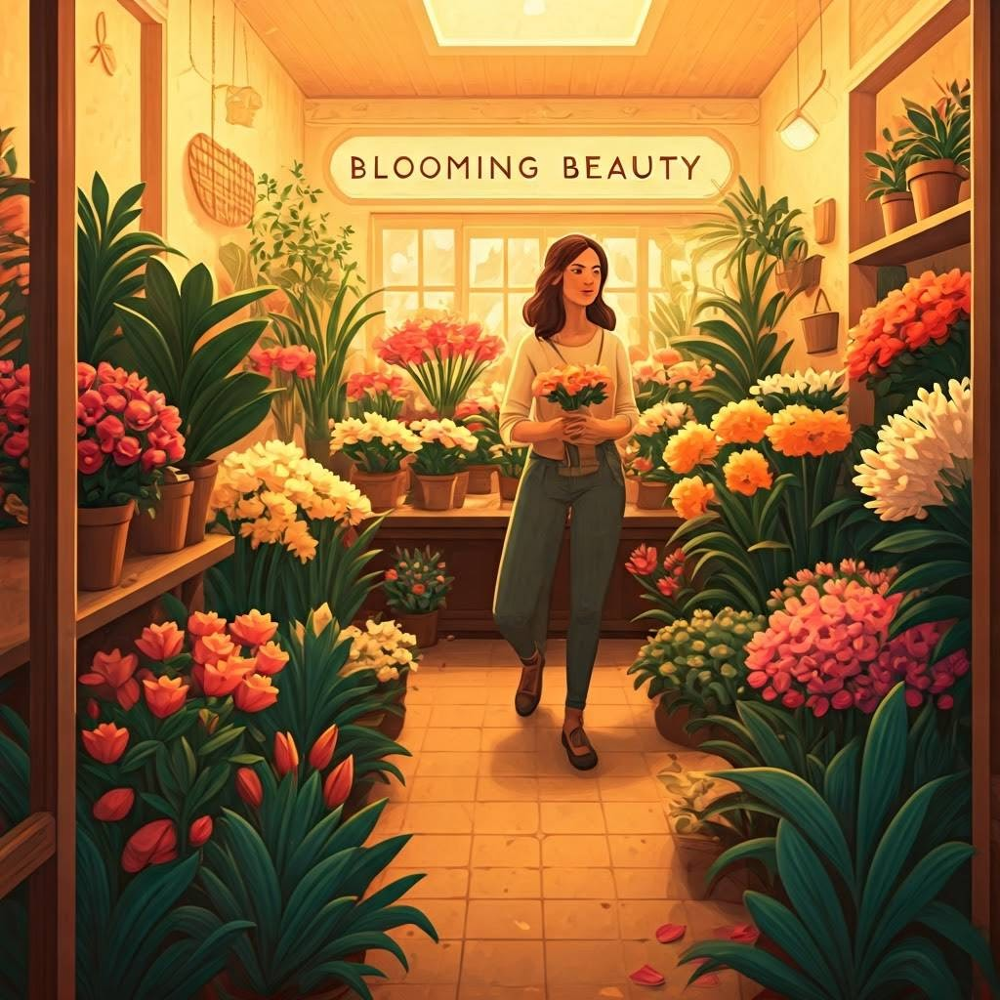
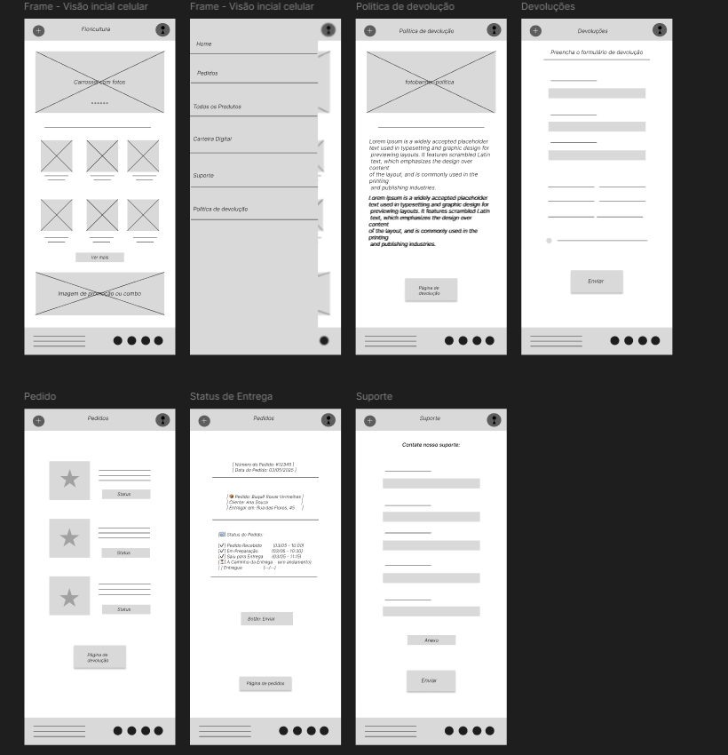

Estudo de Caso – App Floricultura
Objetivo: Criar um aplicativo que ajude a organizarem vendas e pedidos da loja, e que seja de fácil uso para todos os clientes, com design incluso.
1. Identificação do Problema
A dona da loja, Mary, não consegue mais deixar organizado seu estoque e suas vendas sem um sistema, pois está com muita demanda de uns anos para cá.
2. Pesquisa com Usuários
Pesquisei com 3 pessoas diferentes, duas com facilidades com a tecnologia e uma não. Descobri que:
- As pessoas gostam de facilidade quando vão pedir algo por aplicativo.
- Duas das pessoas acham que o design ajuda muito no interesse e foco dentro do aplicativo.
- Indicaram página de suporte em caso de problemas ou devoluções para pessoas que moram distantes.
3. Persona
4. Jornada do Usuário

5. Wireframes
6. Protótipo Interativo
Para acessar o protótipo, clique no botão abaixo:

7. Testes de Usabilidade
Fiz testes com 3 pessoas. Com base no feedback:
- Melhorei a visibilidade dos botões
- Duas pessoas disseram que as cores monocromáticas deixaram mais fácil achar botões.
8. Aprendizados
Aprendi a importância de testar cedo e com frequência. E como cada detalhe visual impacta a experiência do usuário.
← Voltar para o portfólio